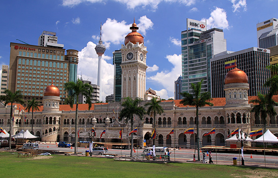

Lets start our journey at Malaysia
Malaysia is a Southeast Asian country occupying parts of the Malay Peninsula and the island of Borneo.
It's known for its beaches, rainforests and mix of Malay, Chinese, Indian and European cultural influences.
The capital, Kuala Lumpur, is home to colonial buildings, busy shopping districts such as Bukit Bintang and skyscrapers such as
the iconic, 451m-tall Petronas Twin Towers.
Capital: Kuala Lumpur
Dialing code: +60
Currency: Malaysian ringgit
lets talk about the Most important cities at Malaysia..
First the Capital Kuala Lumpur.
Kuala Lumpur is the capital city of Malaysia, boasting gleaming skyscrapers, colonial architecture,
charming locals, and a myriad of natural attractions. Divided into numerous districts, its main hub is called
the Golden Triangle which comprises Bukit Bintang, KLCC and Chinatown. KL is widely recognised for
numerous landmarks, including Petronas Twin Towers (the world’s tallest twin skyscrapers), Petaling
Street flea market, and Batu Caves, which is over 400 million years old.
lets talk about the things you must visit at Kuala Lumpur.
Batu Caves is a limestone hill that has a series of caves and cave temples in
Gombak,Selangor, Malaysia. It takes
its name from the Sungai Batu, which flows
past the hill. It is the tenth limestone hill from Ampang.
Address: Gombak, 68100 Batu Caves,
Selangor, Malaysia

Sultan Abdul Samad Building
The Sultan Abdul Samad Building is a late nineteenth century building located along
Jalan Raja in front of the Dataran Merdeka and the Royal Selangor Club in Kuala Lumpur, Malaysia.
Address: Jalan Raja, Kuala Lumpur City Centre, 50050 Kuala Lumpur, Federal
Territory of Kuala Lumpur, Malaysia
The Petronas Towers, also known as the Petronas Twin Towers, are twin
skyscrapers in Kuala Lumpur, Malaysia.
Located in: Suria KLCC
Address: Kuala Lumpur City Centre, 50088 Kuala Lumpur, Wilayah Persekutuan
Kuala Lumpur, Malaysia
Second is George Town.
George Town is the colorful, multicultural capital of the Malaysian island of Penang. Once an important Straits of Malacca
trading hub, the city is known for its British colonial buildings Chinese shophouses and mosques. Beyond the old town, George Town is
a modern city with skyscrapers and shopping malls. Verdant Penang Hill, with hiking and a funicular railway, overlooks it all.
lets talk about the things you must visit at George Town.
The Kek Lok Si Temple is a Buddhist temple situated in Air Itam in Penang facing the sea and commanding an impressive view, and is one of the best
known temples on the island.
It is said to be the largest Buddhist temple in Malaysia.
Address: 1000-L, Tingkat Lembah Ria
1, 11500 Ayer
Itam, Pulau Pinang, Malaysia
The Khoo Kongsi is a large Chinese clanhouse with elaborate and highly ornamented architecture, a mark of the dominant presence of the Chinese in Penang , Malaysia.
The famous Khoo Kongsi is the grandest clan temple in the country.
Address: 18, Cannon Square, George Town, 10450 George Town, Pulau Pinang, Malaysia
The Goddess of Mercy Temple, also known colloquially as Kuan Yin Teng or Kong Hock Keong, is a Taoist temple in the city of George Town in Penang, Malaysia.
Address: Jalan Masjid Kapitan Keling, George Town, 10200 George Town, Pulau Pinang, Malaysia
The Third and Last City is Malacca City
Malacca City (also spelled Melaka) is the capital of the coastal state of Malacca, in southwestern Malaysia.
At its center, Jonker Street, Chinatown’s main thoroughfare, is known for antique shops and its night market.
Nearby, the 17th-century Chinese Cheng Hoon Teng temple has ornate decorations and multiple prayer halls.
A green, 3-tiered roof tops the 18th-century, Javanese-influenced Kampung Kling Mosque.
lets talk about the things you must visit at Malacca City.
The Melaka Islamic Museum is a museum about Islam in Melaka City, Melaka, Malaysia.
Address: Jalan Kota, Bandar Hilir, 75000 Melaka, Malaysia
Christ Church Malacca is an 18th-century Anglican church in the city of Malacca City, Malaysia. It is the oldest functioning Protestant church in Malaysia and is within the jurisdiction of the Lower ...
Address: Gereja Christ, Jalan Gereja, 75000 Melaka, Malaysia
The Melaka Literature Museum is a museum about Malaysian literary works, located in Melaka City, Melaka, Malaysia.
Address: Jalan Kota, Bandar Hilir, 75000 Melaka, Malaysia